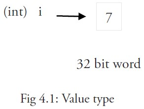
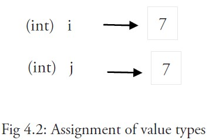
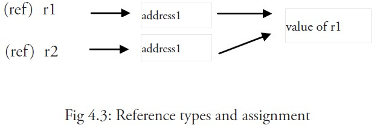

Go 语言变量
变量来源于数学，是计算机语言中能储存计算结果或能表示值抽象概念。
变量可以通过变量名访问。
Go 语言变量名由字母、数字、下划线组成，其中首个字符不能为数字。
声明变量的一般形式是使用 var 关键字：
var identifier type
可以一次声明多个变量：
var identifier1, identifier2 type
实例
import "fmt"
func main() {
var a string = "Runoob"
fmt.Println(a)
var b, c int = 1, 2
fmt.Println(b, c)
}
以上实例输出结果为：
Runoob 1 2
变量声明
第一种，指定变量类型，如果没有初始化，则变量默认为零值。
var v_name v_type v_name = value
零值就是变量没有做初始化时系统默认设置的值。
实例
import "fmt"
func main() {
// 声明一个变量并初始化
var a = "RUNOOB"
fmt.Println(a)
// 没有初始化就为零值
var b int
fmt.Println(b)
// bool 零值为 false
var c bool
fmt.Println(c)
}
以上实例执行结果为：
RUNOOB 0 false
数值类型（包括complex64/128）为0
-
布尔类型为false
-
字符串为""（空字符串）
以下几种类型为nil：
var a *int var a []int var a map[string] int var a chan int var a func(string) int var a error // error 是接口
实例
import "fmt"
func main() {
var i int
var f float64
var b bool
var s string
fmt.Printf("%v %v %v %q\n", i, f, b, s)
}
输出结果是：
0 0 false ""
第二种，根据值自行判定变量类型。
var v_name = value
实例
import "fmt"
func main() {
var d = true
fmt.Println(d)
}
输出结果是：
true
第三种，如果变量已经使用 var 声明过了，再使用:=声明变量，就产生编译错误，格式：
v_name := value
例如：
var intVal int intVal :=1 // 这时候会产生编译错误，因为 intVal 已经声明，不需要重新声明
直接使用下面的语句即可：
intVal := 1 // 此时不会产生编译错误，因为有声明新的变量，因为 := 是一个声明语句
intVal := 1相等于：
var intVal int intVal =1
可以将 var f string = "Runoob" 简写为 f := "Runoob"：
实例
import "fmt"
func main() {
f := "Runoob" // var f string = "Runoob"
fmt.Println(f)
}
输出结果是：
Runoob
多变量声明
//类型相同多个变量, 非全局变量
var vname1, vname2, vname3 type
vname1, vname2, vname3 = v1, v2, v3
var vname1, vname2, vname3 = v1, v2, v3 // 和 python 很像,不需要显示声明类型，自动推断
vname1, vname2, vname3 := v1, v2, v3 // 出现在 := 左侧的变量不应该是已经被声明过的，否则会导致编译错误
// 这种因式分解关键字的写法一般用于声明全局变量
var (
vname1 v_type1
vname2 v_type2
)
实例
import "fmt"
var x, y int
var ( // 这种因式分解关键字的写法一般用于声明全局变量
a int
b bool
)
var c, d int = 1, 2
var e, f = 123, "hello"
//这种不带声明格式的只能在函数体中出现
//g, h := 123, "hello"
func main(){
g, h := 123, "hello"
fmt.Println(x, y, a, b, c, d, e, f, g, h)
}
以上实例执行结果为：
0 0 0 false 1 2 123 hello 123 hello
值类型和引用类型
所有像 int、float、bool 和 string 这些基本类型都属于值类型，使用这些类型的变量直接指向存在内存中的值：

当使用等号=将一个变量的值赋值给另一个变量时，如：j = i，实际上是在内存中将 i 的值进行了拷贝：

你可以通过 &i 来获取变量 i 的内存地址，例如：0xf840000040（每次的地址都可能不一样）。
值类型变量通常存储在栈中，尤其是当它们是局部变量时。当值类型变量的值需要在函数作用域之外使用时，Go 会将其分配到堆内存中。
内存地址会根据机器的不同而有所不同，甚至相同的程序在不同的机器上执行后也会有不同的内存地址。因为每台机器可能有不同的存储器布局，并且位置分配也可能不同。
更复杂的数据通常会需要使用多个字，这些数据一般使用引用类型保存。
一个引用类型的变量 r1 存储的是 r1 的值所在的内存地址（数字），或内存地址中第一个字所在的位置。

这个内存地址称之为指针，这个指针实际上也被存在另外的某一个值中。
同一个引用类型的指针指向的多个字可以是在连续的内存地址中（内存布局是连续的），这也是计算效率最高的一种存储形式；也可以将这些字分散存放在内存中，每个字都指示了下一个字所在的内存地址。
当使用赋值语句 r2 = r1 时，只有引用（地址）被复制。
如果 r1 的值被改变了，那么这个值的所有引用都会指向被修改后的内容，在这个例子中，r2 也会受到影响。
简短形式，使用 := 赋值操作符
我们知道可以在变量的初始化时省略变量的类型而由系统自动推断，声明语句写上 var 关键字其实是显得有些多余了，因此我们可以将它们简写为 a := 50 或 b := false。
a 和 b 的类型（int 和 bool）将由编译器自动推断。
这是使用变量的首选形式，但是它只能被用在函数体内，而不可以用于全局变量的声明与赋值。使用操作符 := 可以高效地创建一个新的变量，称之为初始化声明。
注意事项
如果在相同的代码块中，我们不可以再次对于相同名称的变量使用初始化声明，例如：a := 20 就是不被允许的，编译器会提示错误 no new variables on left side of :=，但是 a = 20 是可以的，因为这是给相同的变量赋予一个新的值。
如果你在定义变量 a 之前使用它，则会得到编译错误 undefined: a。
如果你声明了一个局部变量却没有在相同的代码块中使用它，同样会得到编译错误，例如下面这个例子当中的变量 a：
实例
import "fmt"
func main() {
var a string = "abc"
fmt.Println("hello, world")
}
尝试编译这段代码将得到错误a declared but not used。
此外，单纯地给 a 赋值也是不够的，这个值必须被使用，所以使用
fmt.Println("hello, world", a)会移除错误。
但是全局变量是允许声明但不使用的。 同一类型的多个变量可以声明在同一行，如：
var a, b, c int
多变量可以在同一行进行赋值，如：
var a, b int var c string a, b, c = 5, 7, "abc"
上面这行假设了变量 a，b 和 c 都已经被声明，否则的话应该这样使用：
a, b, c := 5, 7, "abc"
右边的这些值以相同的顺序赋值给左边的变量，所以 a 的值是 5， b 的值是 7，c 的值是 "abc"。
这被称为 并行 或 同时 赋值。
如果你想要交换两个变量的值，则可以简单地使用a, b = b, a，两个变量的类型必须是相同。
空白标识符 _ 也被用于抛弃值，如值 5 在：_, b = 5, 7 中被抛弃。
_ 实际上是一个只写变量，你不能得到它的值。这样做是因为 Go 语言中你必须使用所有被声明的变量，但有时你并不需要使用从一个函数得到的所有返回值。
并行赋值也被用于当一个函数返回多个返回值时，比如这里的 val 和错误 err 是通过调用 Func1 函数同时得到：val, err = Func1(var1)。
其他扩展
Sunird
118***9011@qq.com
空白标识符在函数返回值时的使用：
package main import "fmt" func main() { _,numb,strs := numbers() //只获取函数返回值的后两个 fmt.Println(numb,strs) } //一个可以返回多个值的函数 func numbers()(int,int,string){ a , b , c := 1 , 2 , "str" return a,b,c }输出结果：
Sunird
118***9011@qq.com
小五
dai***63@163.com
局部变量：在函数体内声明的变量称之为局部变量，它们的作用域只在函数体内，参数和返回值变量也是局部变量。
全局变量：在函数体外声明的变量称之为全局变量，全局变量可以在整个包甚至外部包（被导出后）使用。
备注：
1.局部变量不会一直存在，在函数被调用时存在，函数调用结束后变量就会被销毁，即生命周期。
2.Go 语言程序中全局变量与局部变量名称可以相同，但是函数内的局部变量会被优先考虑。
小五
dai***63@163.com